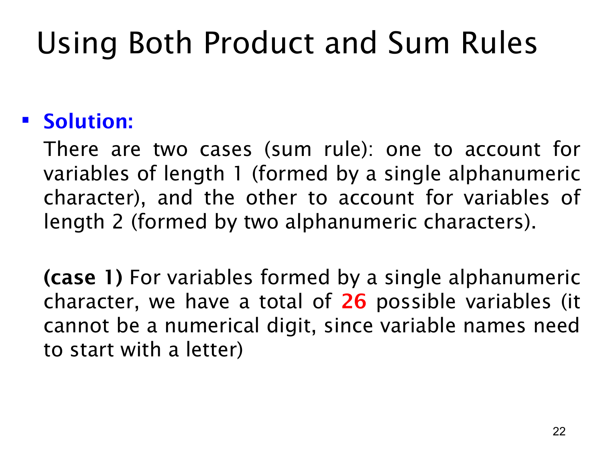

课件第 22 页讲解原文
查看这一页课件

按长度分情况：单字符变量名
这页开始展开变量名问题的解答。由于变量名只能长 1 或长 2，先定义两个类别：V1 是长度为 1 的合法变量名集合，V2 是长度为 2 的合法变量名集合。
这两类覆盖题目允许的全部长度，而且互不相交。因此总数可以写成：
∣V1∪V2∣=∣V1∣+∣V2∣.
本页只计算第一类 V1。长度为 1 的变量名只有一个字符，而这个字符同时也是首字符。规则要求变量名以字母开头，所以这个位置只能使用 26 个英文字母：
∣V1∣=26.
不能把这类算成 36，因为数字虽然属于 alphanumeric characters（字母数字字符），却不能放在开头。对于一个单字符名字，根本没有“后面的位置”可以容纳数字。
也不能算成 52，因为该语言不区分大小写。例如 A 和 a 表示同一个变量名，不是两个不同结果。
题目禁用的 5 个保留字符串长度都是 2，因此不会从这一类中扣除任何名字。单字符这一支的答案就是 26；两字符那一支应独立计算，再把两支相加。
先分情况的好处是：每一种长度都有固定的位置数量和清楚的限制，不需要尝试用一个乘积同时表示不同长度的字符串。